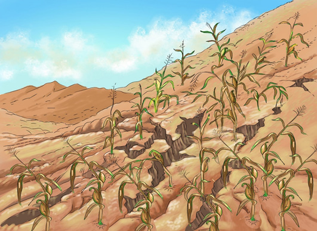

Addressing the effects of poor farming practices
There are different methods of controlling the effects of poor farming practices. These methods include contour farming to prevent soil erosion. Another method is mixed cropping, in which different crops are grown together on a farm. This kind of cultivation increases soil fertility. Crop rotation helps to increase soil fertility. For example, if a farmer cultivates maize this year, next year leguminous crops can be cultivated on the same farm to improve soil fertility. Mulching by using grass and crop remains can help to maintain soil moisture, control surface runoff and soil temperature.